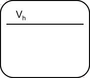

Glutamatergic Synapse
Last four digits of your ID
50 μM APV 50 μM CNQX Experimental
Hold



Vh
mV
Duration
ms
Neurophysiology
BIO 5433
University of Texas at San Antonio
50 μM APV 50 μM CNQX Experimental
Hold